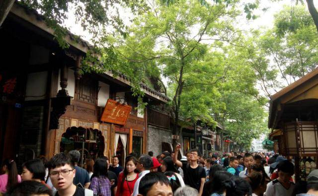
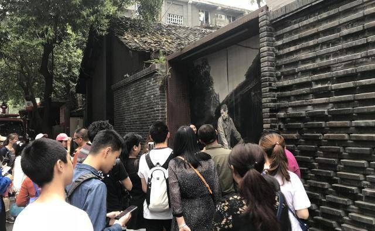

基本上从一早开始，来自国内不同地方的游客开始集聚宽窄巷子，街道上人头攒动，喧嚣声此起彼伏，大家热情高涨的随着人流一点点挪动着，这样的场景着实震撼。原本并不是很宽的巷子内，除了两侧的商铺外，到处都是游客的身影，由于是双向人流涌动，很多游客基本上都是跟着人流慢慢挪动着，甚至于有一位从南京过来的游客吐槽道：夫子庙每年都去，今年想着来宽窄巷子逛逛，一早就来到了这里，谁知道人还是非常的多，一路上小心翼翼的跟着人流走动着，但还是被踩掉了七八次鞋子，早知道还不如在家待着呢。风景之外有很多的娱乐项目，比如大家喜欢的空中飞行，水降落伞，攀岩等，这些都是年轻人比较喜欢的项目，玩起来特别的刺激。当然如果你喜欢玩游戏，一定要记得感受一下，周围环境的秀丽。
